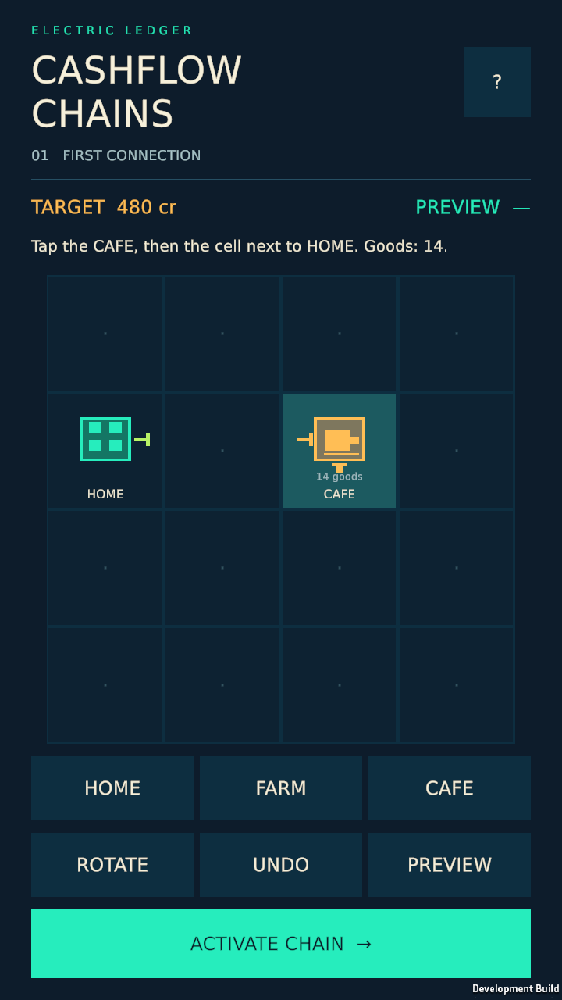
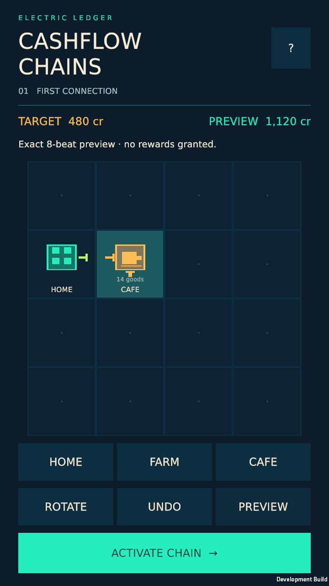
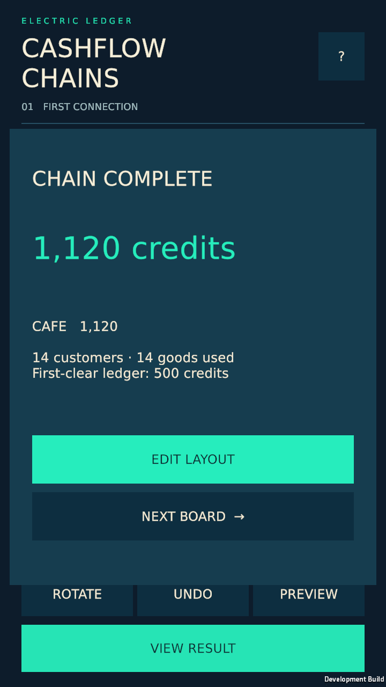
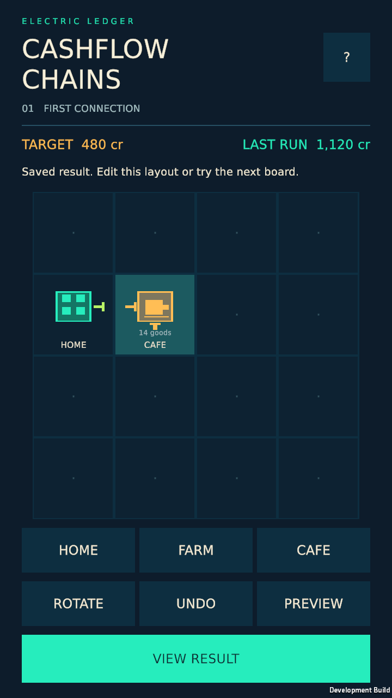
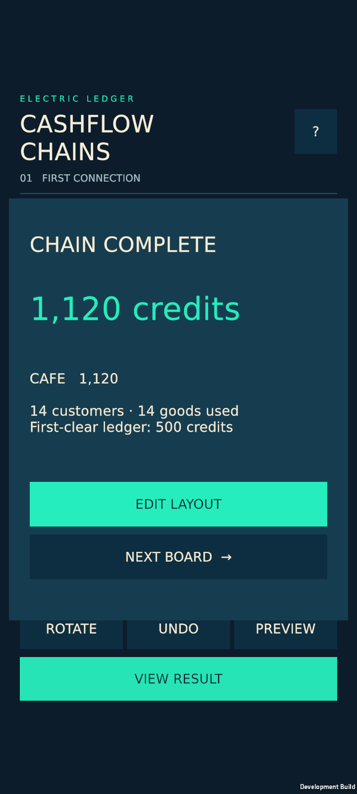
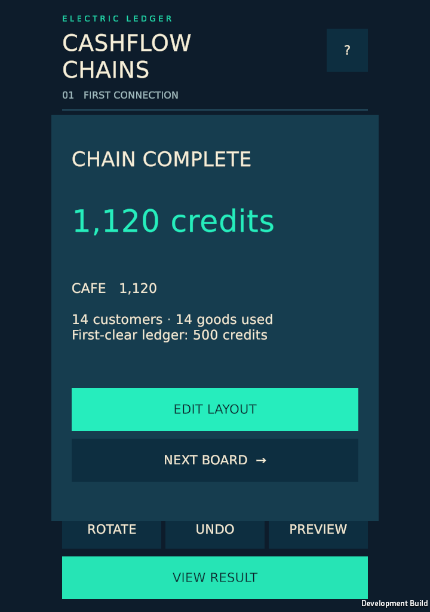

P00–P02 mechanic slice. Actual Linux Unity player captures, OS pointer input and cold resume. Production art, physical device acceptance, enjoyment and revenue are unverified.
Status and limitations · Input and source report





